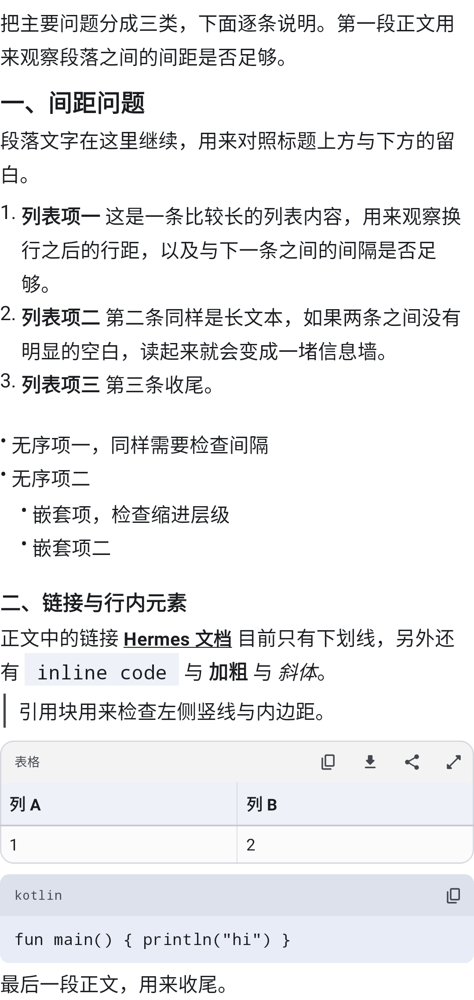
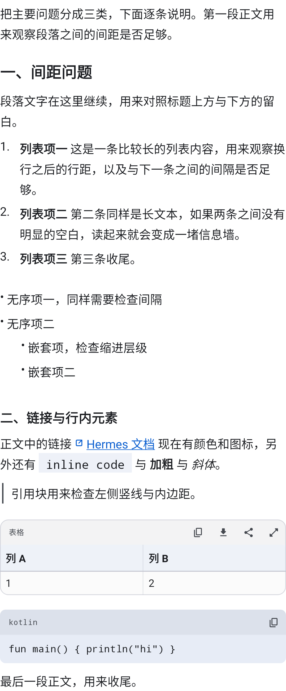
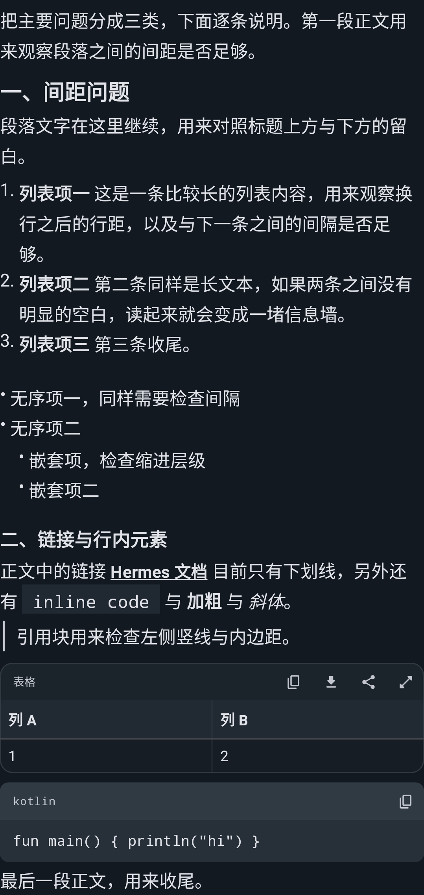
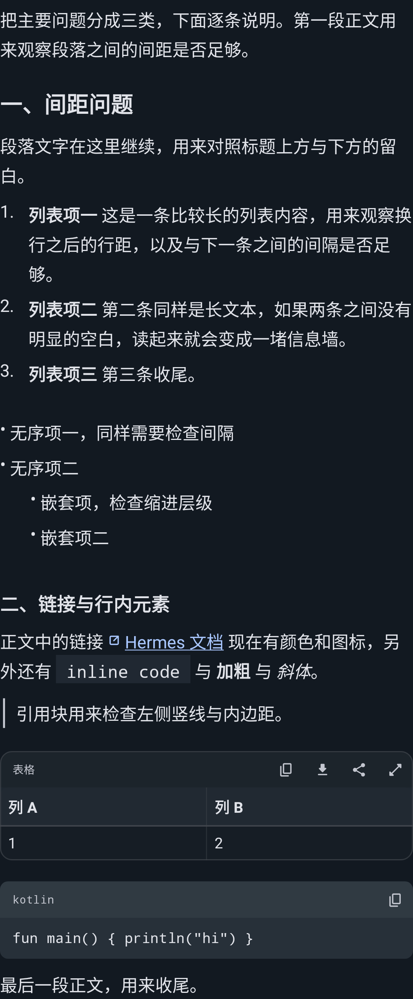
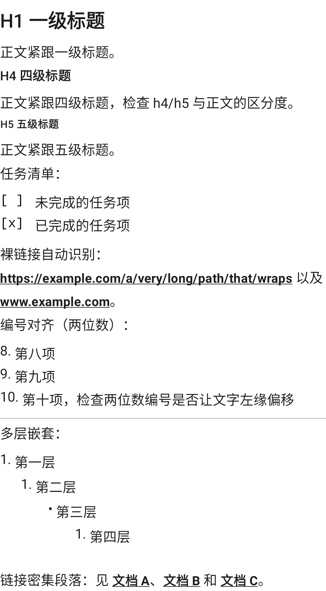
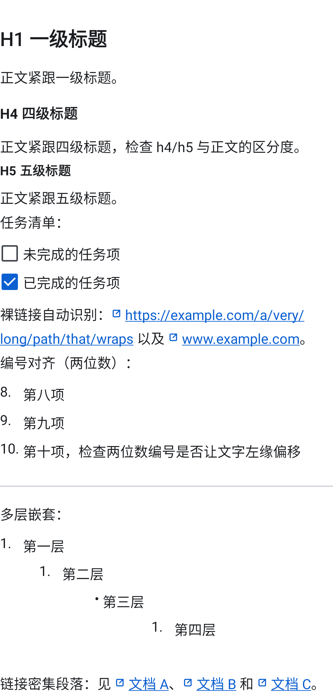

助手回复正文（AssistantMarkdownBlock）此前没有排版契约，DESIGN.md §5.4 只定义了用户气泡。
本稿把间距与字号定为一套明确取值。左右两栏都是 真实渲染器（Roborazzi，411dp / 420dpi / 字体缩放 1.0）的输出，不是网页近似。
下方所有 dp 数字为逐行扫描测得的纯空白高度。
Compose 会裁掉每个 Text 首行上方、末行下方的半行距。所以正文 lineHeight = 29sp 只在一个列表项内部买到了空气，
两项之间一点都没有 —— 项间距 = listItemTop 2 + listItemBottom 2 + 字体升降部 ≈ 7dp = 11dp，
而同一项折行的间距是 12.6dp。项边界比行边界还弱，这就是「1、2、3 点」塌成信息墙的原因；靠调行高解决不了。





[ ] / [x]；10. 把文字左缘顶歪；分隔线上下无留白；嵌套缩进仅 8dp/层。
| 边界 | 现状 | 提案 | 说明 |
|---|---|---|---|
| 段内换行（基准） | 12.6 | 12.6 | 不变 |
| 段 → 段 | ≈17.6 | ≈17.6 | 你认可，不动 |
| 有序列表项之间 | 11.0 / 10.3 | 17.1 / 16.4 | 核心修复 |
| 无序列表项之间 | 12.2 | 18.3 | |
| 正文 → 列表 | 18.3 | 21.3 | 列表成组 |
| 段 → H2 | 21.3 | 35.4 | 标题开章 |
| H2 → 正文 | 14.5 | 23.2 | 标题不再粘住正文 |
| H3 → 正文 | 13.7 | 20.2 | |
| 正文 → 引用块 | 10.7 | 18.7 | 引用是块，不是续行 |
| 代码块 → 正文 | 22.1 | 30.1 |
| 令牌 | 现状 | 提案 |
|---|---|---|
| 正文 | 17sp / 29sp | 17sp / 29sp（不变） |
block 段落间 | 5dp | 5dp（不变） |
listItemTop/Bottom | 2 / 2 | 5 / 5 |
list 列表上下 | 4（库默认） | 4（保持；再大会打洞） |
listIndent 每层缩进 | 8（库默认） | 20 |
| 有序编号列宽 | 自适应 | 定宽 28dp |
| H1 上 / 下 | 0 / 0 | 22 / 8 |
| H2 上 / 下 | 6 / 0 | 20 / 8 |
| H3 上 / 下 | 4 / 0 | 16 / 6 |
| H4 上 / 下 | 0 / 0 | 14 / 6 |
| h2 / h3 字号 | 21 / 18sp | 22 / 18.5sp |
| h4 / h5 / h6 字号 | 16 / 13 / 13sp | 17 Bold / 15.5 Bold / 15.5 Bold |
| 表格正文 | 14sp / 22 | 15sp / 23 |
| 引用块上下 | 0 | 8 |
| 分隔线上下 | 0 | 16 |
| 代码块 / 表格卡外边距 | 0 / 4 | 8 / 8 |
| 链接 | 仅下划线（同正文色） | primary + 细下划线 + 前置 13dp 外链图标 |
| 任务清单 | 字面 [ ] | M3 复选框 |
新增 ExternalLinkIcon（StrokeIcons.kt）：24×24 viewport 手绘描边、圆头圆角，走 DESIGN.md §4.1 的
小尺寸补偿（2.4 描边，13dp 下 ≈1.3dp，与 17sp 正文同重）。通过 MarkdownAnnotator +
InlineTextContent 插在链接文字前，后面跟一个 U+2060 WORD JOINER —— 否则断行器会把图标当独立单词，
留在上一行行尾、和链接分家（第一版原型就出现了这个问题）。
① 链接点击目前直接走库的 LocalUriHandler.openUri：设备无浏览器时 ActivityNotFoundException 会崩，且没有
scheme 白名单（javascript: / file: 会照开）。按 docs/ERROR_HANDLING.md 这条路径需要一个
HR-CHAT-* 错误码（目前一个都没注册）。
② 超长无空格 URL 仍不做中间断行（本稿的 WORD JOINER 顺带改善了一部分）。
③ 项目符号「•」偏小、顶对齐，未改。